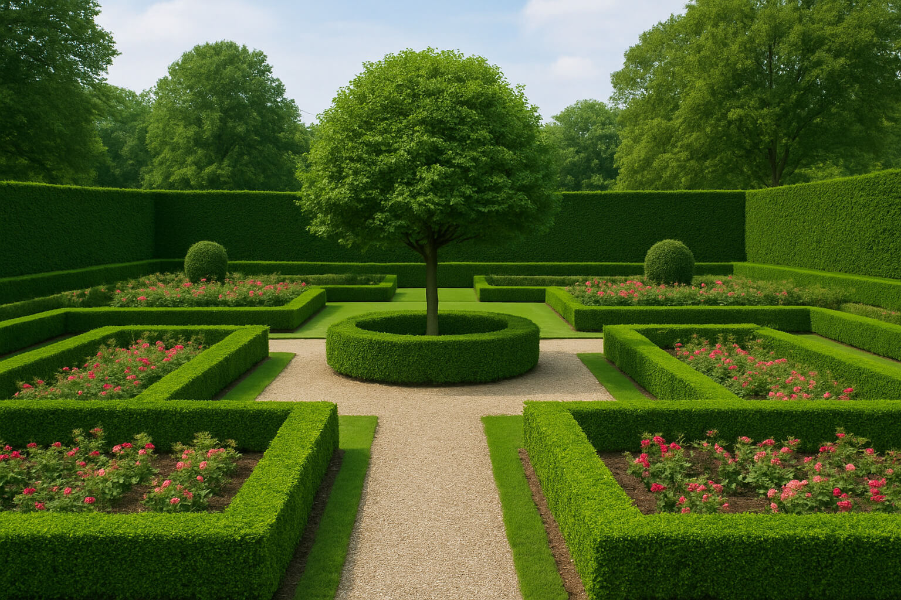
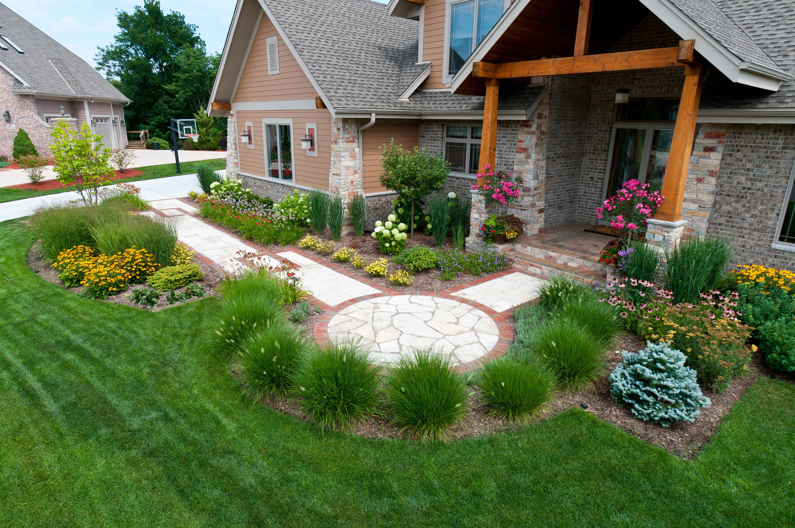
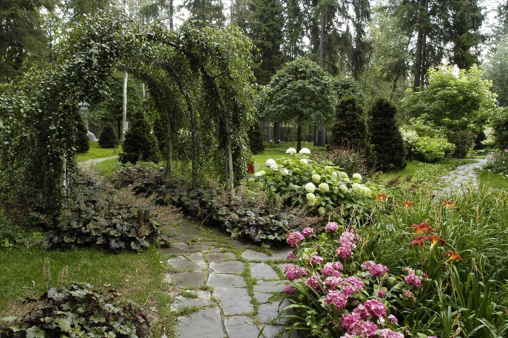
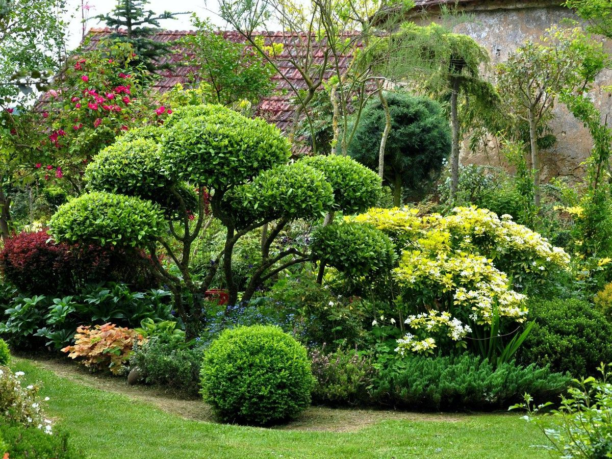
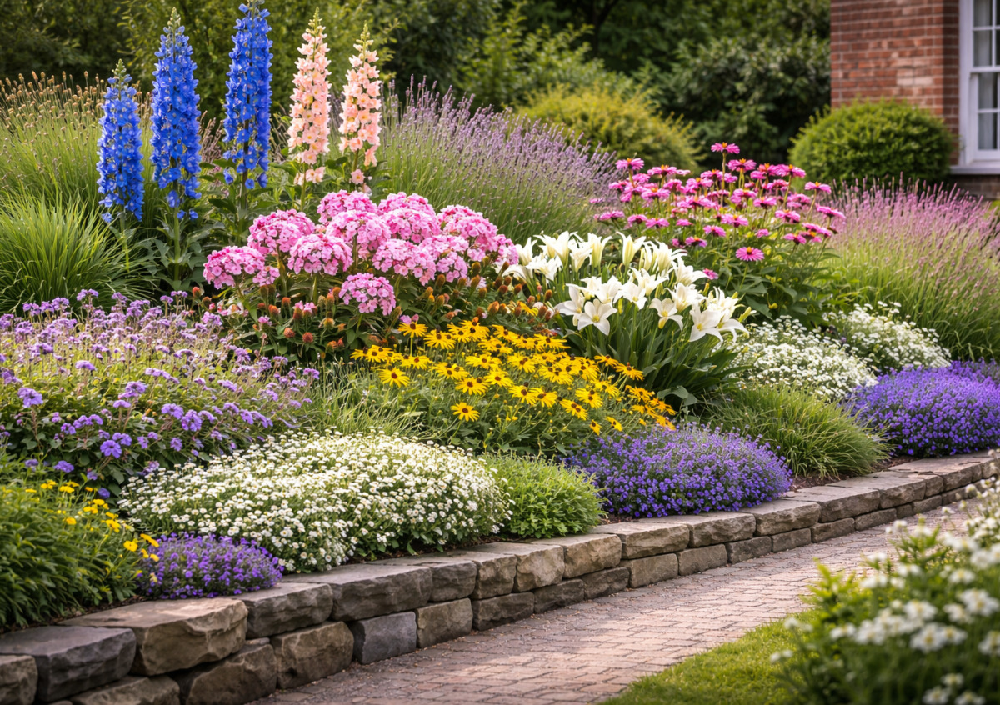

Регулярный стиль
Этот стиль отличается строгой геометрией и симметрией.
- Ровные дорожки
- Стриженые кустарники
- Фонтаны и скульптуры

Я начала заниматься этим три года назад. Сначала просто помогала родителям на даче, а потом увлеклась по-настоящему.
Мне нравится видеть, как пустой участок превращается в красивый сад со своей историей.

Этот стиль отличается строгой геометрией и симметрией.

Здесь всё ближе к природе: плавные линии, естественные формы.


Многолетники - основа сада. Они возвращаются каждый год и не требуют повторной посадки.
